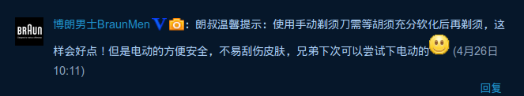
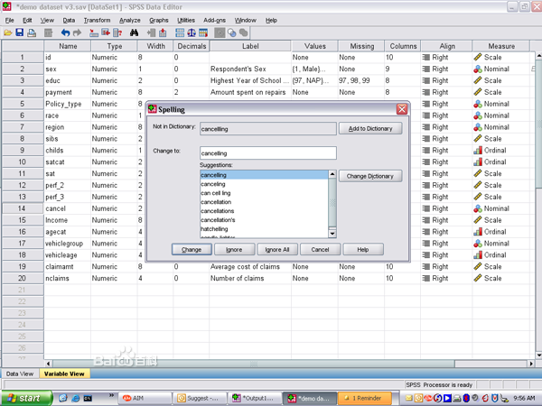
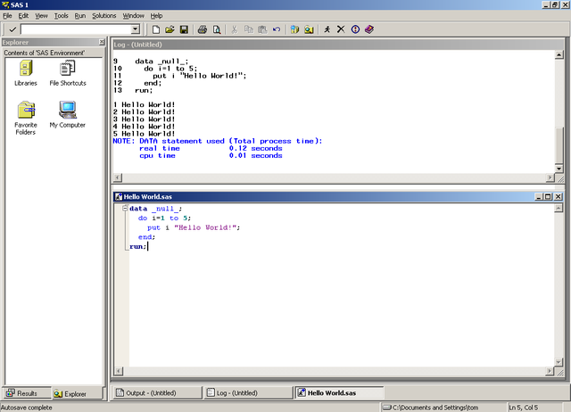
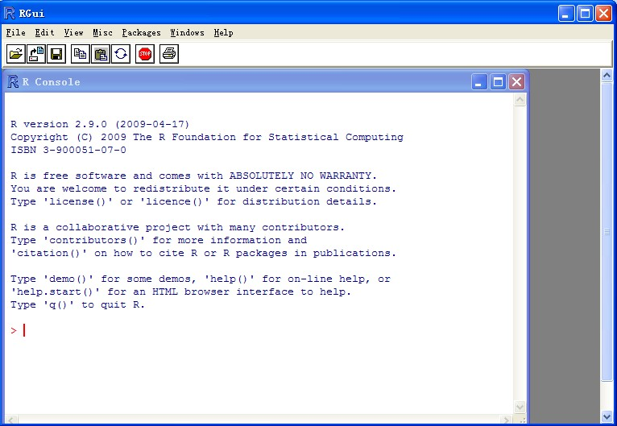
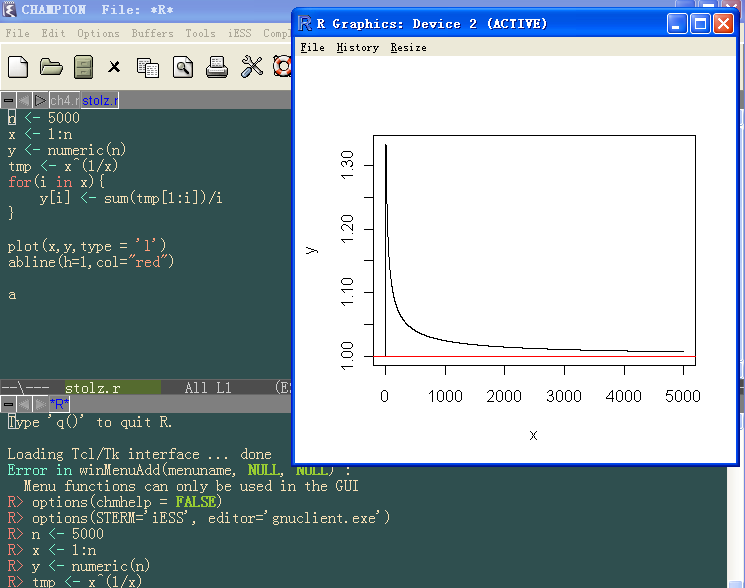
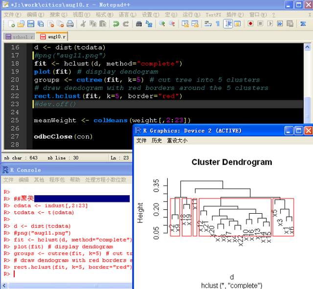
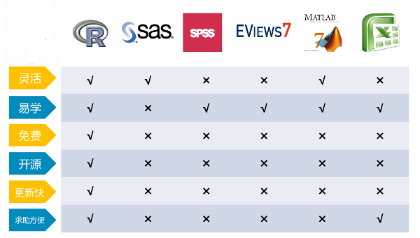
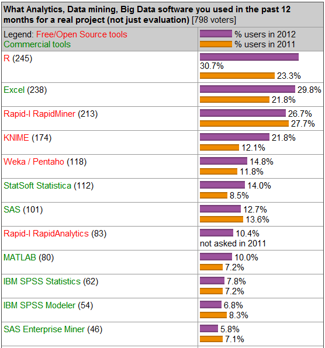

漫谈统计分析
访问Google
统计与数据挖掘
常用统计方法
描述统计
数据挖掘
数据挖掘的应用
- 精准广告、直效行销（Direct Marketing）
- 银行业：信用卡评分、客户关系管理（CRM）
- 制造业和医疗
- 欺诈行为预测（Fraud Detection）
- ……
案例一

常用统计工具软件介绍
Excel

SPSS

SAS

R

R的IDE：RStudio

R的IDE：Emacs+ESS

R的IDE：Notepad++ & NppToR

几种软件的比较


统计学习资源介绍
推荐资料
- 统计学：从数据到结论
- 数据之美
- New Internet：大数据挖掘
- R菜鸟入门
- 《153 分钟学会 R》
- R参考卡片
- R语言实战
- R语言编程艺术
- 数据挖掘与R语言
- ……